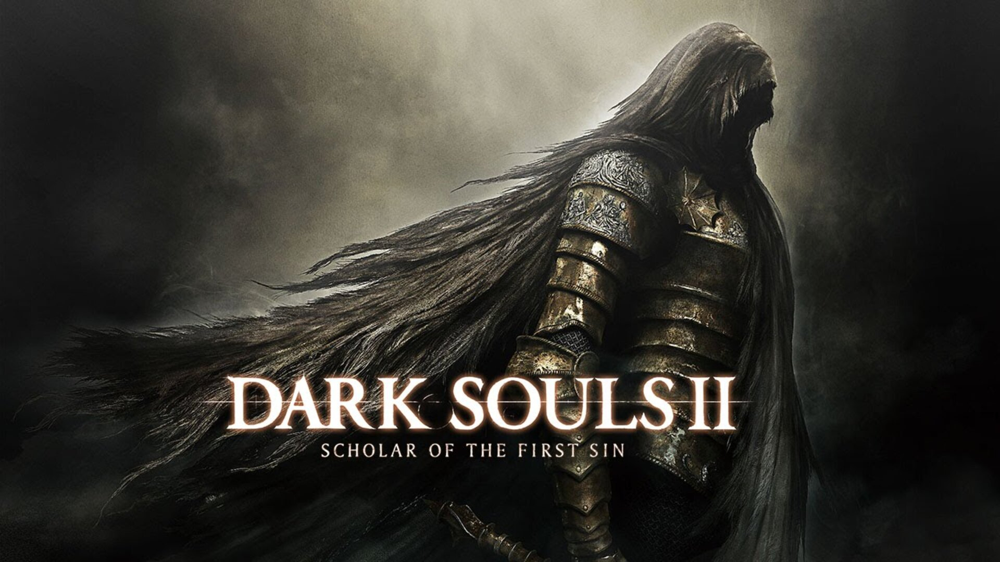
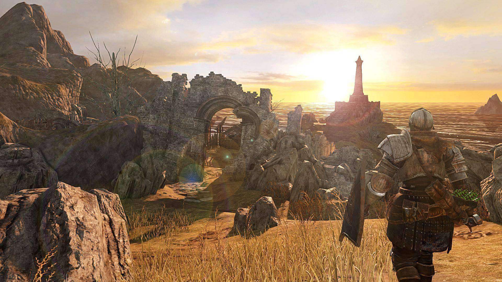

A diferencia de las tierras ancestrales de Lordran o los parajes olvidados de Lothric, Drangleic es un reino de ecos. Un lugar al que los malditos son arrastrados no por un destino heroico, sino por la desesperada necesidad de recuperar la memoria y el alma antes de ser consumidos por la huequedad.
Construido sobre los cimientos de civilizaciones aún más antiguas que sucumbieron al mismo ciclo inexorable, Drangleic es un monumento a la ambición y al dolor. Aquí, los gigantes cruzaron el océano clamando venganza; los reyes buscaron desafiar las leyes de la naturaleza para proteger a sus súbditos; y seres nacidos de los fragmentos de la Oscuridad susurraron promesas de poder al oído de los poderosos.
Al adentrarte en este mundo, no solo te enfrentará a bestias abominables y caballeros caídos; te enfrentarás al tiempo mismo, a la pérdida de identidad y a la tentación de abandonar todo consuelo en la calidez de Majula.
Bienvenido a la Wiki de Dark Souls II
"Un día llegarás a las puertas de Drangleic sin saber muy bien por qué... Como una polilla atraída por la llama."
Te damos la bienvenida a la enciclopedia definitiva y compendio del conocimiento de DS II (incluyendo la edición Scholar of the First Sin y la trilogía de DLCs Las Coronas Perdidas). Este espacio ha sido erigido por la comunidad de eruditos, exploradores y no muertos malditos con un único propósito: arrojar luz sobre las profundas sombras que envuelven a este vasto y trágico reino.
Ya seas un recién llegado que acaba de despertar en el Altar de Amparo temblando ante la pérdida de su humanidad, un veterano de mil batallas que busca perfeccionar una build de combate al milímetro, o un estudioso del lore empeñado en descifrar los enigmas del Rey Vendrick y el Sabio de la Primera Llama, este es tu hogar. Aquí encontrarás datos precisos, mapas interactivos, guías paso a paso y la sabiduría colectiva de miles de jugadores que han pisado estas tierras antes que tú.

La Tierra de las Ánimas Olvidadas: ¿Qué es Drangleic?

Majula: El Refugio de los Sin Luz
A diferencia de los bulliciosos bastiones de otras épocas o las ciudades colosales consumidas por la locura, Majula se presenta ante el viajero cansado como un oasis de aparente tranquilidad al borde del abismo. Bañada por una luz crepuscular perpetua y mecida por el sonido constante y solitario de las olas rompiendo contra los acantilados, este pequeño asentamiento costero es el primer rayo de esperanza que encuentra el Portador de la Maldición al adentrarse en las tierras de Drangleic.
Sin embargo, bajo su atmósfera apacible y el suave murmullo de su brisa marina, se esconde una profunda y desgarradora melancolía. Majula es un punto de encuentro para almas perdidas, un refugio temporal donde aquellos que cargan con el peso de la marca oscura buscan consuelo antes de sucumbir definitivamente a la hondonada. En este lugar convergen figuras tan enigmáticas como la Esmeralda Heraldo, el curtido herrero Lenigrast o la tétrica y solitaria armera Maughlin, todos ellos aferrándose a fragmentos de un propósito que el tiempo y la maldición se empeñan en borrar.
Más Información